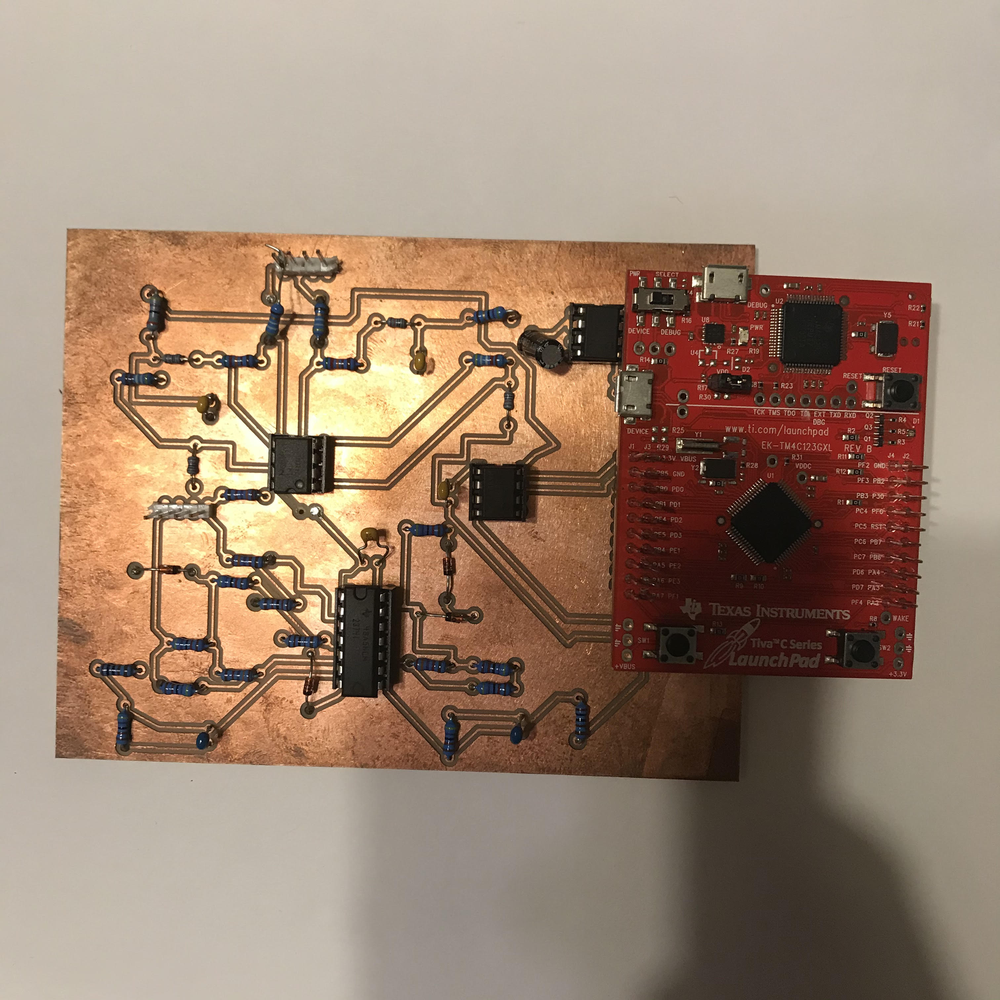

Programmable Pulse Generator
Project Description
The goal of this project is to design a low cost (<$10) system capable of generating various waveforms on two analog outputs while also providing two analog inputs allow measurement of the amplitude of a signal, providing feedback for automatic level control and load impedance estimation This project has a command line interface capable of controlling the system and providing measurement data back to the user. This device can generate;
- DC signals between -5V and +5V
- Sine waves with amplitudes ranging from -5V to +5V, specified offset and frequencies ranging from 0Hz to 50KHz
- Square waves with amplitudes ranging from -5V to +5V, specified offset, frequencies ranging from 0Hz to 50KHz and programmable duty cycle
- Sawtooth waves with amplitudes ranging from -5V to +5V, specified offset and frequencies ranging from 0Hz to 50KHz
- Trainge waves with amplitudes ranging from -5V to +5V, specified offset and frequencies ranging from 0Hz to 50KHz
Components
- TM4C123GH6PMI; 32-Bit ARM Cortex M4F microcontroller
- MAX660 Switched Capacitor Voltage Converter
- MCP4822 Digital to Analog Converter (DAC)
- Operational Amplifiers
Skills and Software Used
- PCB Layout and Design in Eagle
- C programming
- Knowledge from embedded systems; GPIO, ADC, SPI, UART
Images
- PCB Schematic in Eagle
- Routed PCB in eagle
- PCB and TM4C123GXL (Red Board)
- Serial Terminal running program
- Results on oscilloscope
- Results on oscilloscope
